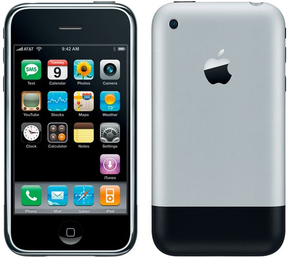

Steve jobs
Steve Jobs, born Steven Paul Jobs on February 24, 1955, in San Francisco, California, was an American businessman, inventor, and investor renowned for co-founding Apple Inc., NeXT, and Pixar. He played a pivotal role in the personal computer revolution of the 1970s and 1980s alongside Steve Wozniak. Jobs co-founded Apple in 1976, leading to the successful Apple II and Macintosh computers. After leaving Apple in 1985, he founded NeXT and later contributed to the visual effects industry through Pixar. Jobs returned to Apple in 1997, revitalizing the company with iconic products like the iMac, iPod, iPhone, and iPad. Despite battling health issues, Jobs continued to innovate until his death in 2011, receiving posthumous recognition, including the Presidential Medal of Freedom in 2022
"First IPhone 2007"

"Latest IPhone 2024"

Education
Steve Jobs' educational journey was unconventional and marked by his pursuit of knowledge outside traditional academic paths. Jobs attended Reed College in Portland, Oregon, briefly in 1972 but dropped out after just six months due to the mismatch between the structured curriculum and his passion for practical, technology-focused learning
Despite not earning a degree, his time at Reed College was influential as he audited classes that resonated with him, notably calligraphy, which later influenced Apple's design philosophy
Jobs' decision to drop out was driven by his desire for practical, technology-focused knowledge and a reluctance to burden his parents with the high costs of education that he found irrelevant to his aspirations
This departure from formal education did not deter Jobs from pursuing knowledge independently. He continued to audit classes that interested him, like calligraphy, showcasing his preference for self-directed learning focused on his specific interests
This alternative approach to education played a significant role in shaping Jobs' success and his innovative contributions to the tech industry, challenging the notion that traditional education is the sole path to innovation
Carrier
Steve Jobs' career was marked by innovation, entrepreneurship, and a relentless pursuit of excellence in the tech industry. Jobs co-founded Apple Inc. in 1976 with Steve Wozniak, where he played a pivotal role in revolutionizing personal computing with iconic products like the Apple II and Macintosh computers
After leaving Apple in 1985, Jobs founded NeXT Inc., a hardware and software company, and later acquired Pixar Animation Studios, which produced popular films like "Toy Story" and "Finding Nemo"
In 1997, Jobs returned to Apple as CEO, leading the company to new heights with groundbreaking products such as the iMac, iPod, iPhone, and iPad, which reshaped modern technology and consumer electronics
"Famous Quotes of Steve JObs"
- "Your work is going to fill a large part of your life, and the only way to be truly satisfied is to do what you believe is great work. And the only way to do great work is to love what you do. If you haven't found it yet, keep looking. Don't settle. As with all matters of the heart, you'll know when you find it."
- "Innovation distinguishes between a leader and a follower."
- "Stay hungry, stay foolish."
- "Your time is limited, don't waste it living someone else's life."
- "The people who are crazy enough to think they can change the world are the ones who do."
- "Design is not just what it looks like and feels like. Design is how it works."
- "Creativity is just connecting things."
Awards
Grammy Trustees Award in 2012
4
.
PGA Vanguard Award in 2002
4
.
International Star Award for Actor at the Palm Springs International Film Festival in 2016 for his portrayal in the film "Steve Jobs"
5
.
LAFCA Award for Best Actor at the Los Angeles Film Critics Association Awards in 2015 for his role in "Steve Jobs"
5
.
National Medal of Technology in 1985 for his contributions to the tech industry
3
.
CEO of the Decade by Fortune magazine in 2009
3
.
Posthumous Presidential Medal of Freedom awarded by President Joe Biden in 2022, the highest US honor for civilians, recognizing Jobs' exemplary contributions to technology and society
2
.
These awards reflect the impact of Steve Jobs' work on various industries, from personal computing to animated movies, music, smartphones, and more, solidifying his legacy as a visionary and influential figure in the world of technology and innovation
"Books Of Steve Jobs"
"The Evolution of a Reckless Upstart into a Visionary Leader" by Brent Schlender and Rick Tetzeli - This book offers a different perspective on Jobs' life and career, focusing on his evolution as a person and a leader.
"Becoming Steve Jobs:"
"Steve Jobs" by Walter Isaacson - This biography is based on more than forty interviews with Jobs conducted over two years, as well as interviews with more than a hundred family members, friends, adversaries, competitors, and colleagues.
"insanely Great:"
"The Life and Times of Macintosh, the Computer that Changed Everything" by Steven Levy - While not solely focused on Steve Jobs, this book delves into the creation of the Macintosh computer, a project that Jobs spearheaded at Apple.